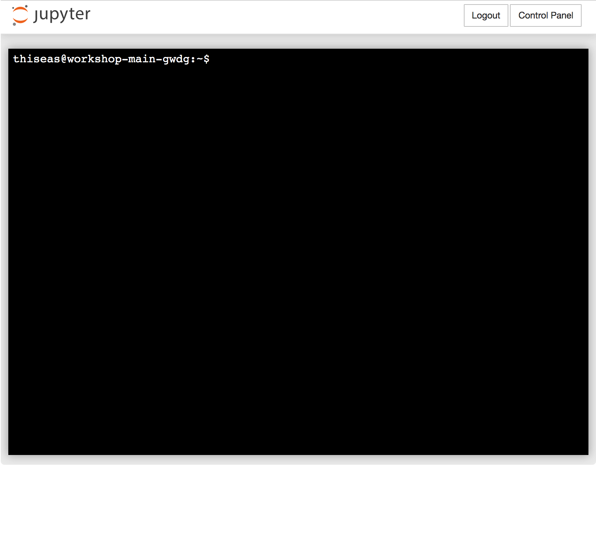

layout: true <div class="my-header"></div> <div class="my-footer"><img src=".images/BareBonesBash_Icon.png" /></div> --- class: center, middle # .tiny[_Boosted_ Bespoke] # .large[**Bare Bones Bash**] ## .tiny[Brought By Blissfully Baffled Bioinformaticians] Thiseas C. Lamnidis James A. Fellows Yates Aida Andrades Valtueña <br/> <br/> <br/> <a rel="license" href="http://creativecommons.org/licenses/by-sa/4.0/"> <img alt="Creative Commons License" style="border-width:0" src="https://i.creativecommons.org/l/by-sa/4.0/88x31.png" /> </a> .small[<br />This work is licensed under a <br/> <a rel="license" href="http://creativecommons.org/licenses/by-sa/4.0/">Creative Commons Attribution-ShareAlike 4.0 International License</a>.] --- # Who are we? .small[ ### ~~Bowser~~ James] .medium[ - BSc. @ Department of Archaeology (York) - MSc. @ Institute for Archaeological Sciences (Tübingen) - Ph.D.(?) @ Department of Archaeogenetics (Jena) ] .small[### ~~Yoshi~~ Thiseas] .medium[ - BSc. @ Department of Biology (York) - MSc. @ Department of Anthropology (Durham) - Ph.D.(?) @ Department of Archaeogenetics (Jena) ] .small[### Aida] .medium[ - BSc. @ UAB Department of Genetics (Barcelona) - MSc. @ Institute for Archaeological Sciences (Tübingen) - Ph.D.(?) @ Department of Archaeogenetics (Jena) ] .right-column-33[ <div class="vertical-center-with-title"> <img src=".images/James_JamessDaughter_Thiseas_In_Japan.jpg" width="80%"> </div> ] ??? BOTH --- # Aims of this session - Aim: - Get more familiar with text modification with bash -- - Objectives: - How to find stuff? - What is a while loop? - How to write a conditional statement (if/else) - Regular expressions (aka "Regex") - _Simple_ text modfication with `sed` (i.e. witchcraft) - _Advanced_ text modification with `awk` (i.e. necromancy) -- .left-column[ <p align="center"> <img title="Source https://giphy.com/gifs/comedy-retro-musical-UjYw9fdCEPwU8" src="https://media.giphy.com/media/UjYw9fdCEPwU8/giphy.gif" width=55% > </p> ] -- .right-column[ <p align="center"> <img title="Source: https://giphy.com/gifs/bethesda-elder-scrolls-online-necromancer-zumog-phoom-hsaHwzGKJucbXRa7B6" src="https://media.giphy.com/media/hsaHwzGKJucbXRa7B6/giphy.gif" width=70% > </p> ] --- # Future outcomes - Make your work more efficient - Large scale modifications of files - Make your work more reproducible - Wizardary (stuff that we can't even imagine...) <p align="center"> <img title="Source: https://giphy.com/gifs/t9lPSqrGSc1IOnajTz" src="https://media.giphy.com/media/t9lPSqrGSc1IOnajTz/giphy.gif" width=50% > </p> -- - Make fewer mistakes - Eliminate human error (blame it on the computer!) -- - Look like a ~~computer nerd~~ really cool --- class: center, middle # **RECAP**: Five Commandments of Bare Bones Bash ??? THISEAS --- class: middle .left-column[ ### 1. Be lazy! ] .right-column[ - Desire for shortcuts motivates you explore more! ] ??? It's better to spend 1day working on a script that will save you 5min per day for the rest of your PhD, than putting in those 5 minutes! TAB will be you favourite key by the time we are done here. --- class: center, middle .left-column[ ### 1. Be lazy! ### 2. ~~Google~~ The Hive-Mind knows everything. ] .right-column[ - Desire for shortcuts motivates you explore more! - 99% of the time, someone else has already had the same issue. ] ??? HOW to google programming questions is not as trivial as it sounds. In the final part of today's session we can talk a bit about this. --- class: center, middle .left-column[ ### 1. Be lazy! ### 2. ~~Google~~ The Hive-Mind knows everything. ### 3. Document everything you do. ] .right-column[ - Desire for shortcuts motivates you explore more! - 99% of the time, someone else has already had the same issue. - Makes future you happy ] --- class: center, middle .left-column[ ### 1. Be lazy! ### 2. ~~Google~~ The Hive-Mind knows everything. ### 3. Document everything you do. ### 4. There will ALWAYS be a typo! ] .right-column[ - Desire for shortcuts motivates you explore more! - 99% of the time, someone else has already had the same issue. - Makes future you happy - Don't get disheartened, even best programmers make mistakes ] --- class: center, middle .left-column[ ### 1. Be lazy! ### 2. ~~Google~~ The Hive-Mind knows everything. ### 3. Document everything you do. ### 4. There will ALWAYS be a typo! ### 5. Don't be afraid of you freedom! ] .right-column[ - Desire for shortcuts motivates you explore more! - 99% of the time, someone else has already had the same issue. - Makes future you happy - Don't get disheartened, even best programmers make mistakes - Explore! Try out things! ] ??? In my experience, most of learning in programming happens by failing. Repeatedly! --- class: center middle # Preparation! --- # Materials - A long-form walkthrough, and these slides, are all freely avaliable avaliable at: [https://github.com/TCLamnidis/BareBonesBash](https://github.com/TCLamnidis/BareBonesBash) - This session is under **Boosted Bare Bones Bash** <center> **INSERT BOOSTED BBB TOC SCREENSHOT HERE** </center> --- # Into the hacker-verse - Connecting to our server - In your browser, go to the URL that you got with your login information. - Log-in with the user and password we provided you. --- class: center <p align="left"><img src=".images/Jupyter1.png" width="100%" ></p> --- class: center <p align="left"><img src=".images/Jupyter2.png" width="100%" ></p> --- class: center <p align="left"><img src=".images/Jupyter3.png" width="100%" ></p> --- class: center <p align="left"><img src=".images/Jupyter4.png" width="100%" ></p> --- class: center <p align="left"></p> ??? What you see here is the "command prompt". username@server:pwd$ me, at the workshop server. ~ means "my HOME directory" (user specific). --- class: middle, center # Always mind the `$` and `>`! <p align="center"> <img title="Source: https://giphy.com/gifs/studiosoriginals-gilphabet-3o84U72tKO389H2lI4" src="https://media.giphy.com/media/3o84U72tKO389H2lI4/giphy.gif" width = "54%"> <img title="Source: https://giphy.com/gifs/animography-animated-typography-font-gzJNFeqcRcqnm" src="https://media.giphy.com/media/gzJNFeqcRcqnm/giphy.gif" width="30%"> </p> **H/W Fdbk:** When _sharing_ code, don't include the `$` or `>`! makes it harder for others to run! To write multi-line code in one: replace a newline with a `;` ??? in Bash ALWAYS MIND THE $. Only copy after the $ so you dont paste the command prompt too. $ is also important when dealing with variables, which you will see later today. --- class: center,middle # Uhh... what did we do? <p align="center"> <img title="Source: https://giphy.com/gifs/sonic-the-hedgehog-PJiqz1RHkdtGE" src="https://media.giphy.com/media/PJiqz1RHkdtGE/giphy.gif" > </p> --- # Uhh... what did we do? - **Make** a directory: --- # Uhh... what did we do? - ~~**Make** a directory:~~ - **What** did that do again? ```bash $ whatis mkdir ## or $ man mkdir ``` --- # Uhh... what did we do? - **Make** a directory: .left-column[ ```bash $ mkdir boosted_barebonesbash ``` ] .right-column[ > **H/W Note:** One command, multiple directories! ] -- - How to **download** a file? ```bash $ wget https://github.com/TCLamnidis/BareBonesBash/raw/master/data/NHM/data.csv ``` -- - How to **move** a something e.g. file into a directory? ```bash $ mv data.csv boosted_barebonesbash ``` --- # Uhh... what did we do? - **Make** a directory: .left-column[ ```bash $ mkdir boosted_barebonesbash ``` ] .right-column[ > **H/W Note:** One command, multiple directories! ] - How to **download** a file? ```bash $ wget https://github.com/TCLamnidis/BareBonesBash/raw/master/data/NHM/data.csv ``` - How to **move** a something e.g. file into a directory? ```bash $ mv data.csv boosted_barebonesbash ``` .left-column[ - Change **into** a directory ```bash $ cd boosted_barebonesbash ``` ] -- .right-column[ - What's **inside** my directory (+ info)? ```bash $ ls -l ``` ] --- # Uhh... what did we do? - What's **inside** a (text) file? ```bash $ cat data.csv $ head data.csv $ tail data.csv $ less data.csv ``` -- .left-column[ - How to **combine** tools? ```bash $ cat data.csv | grep '|' | wc -l ``` ] -- .right-column[ - **H/W Fdbk:** Be _lazy_! ```bash $ grep '|' data.csv | wc -l ``` ] ??? Remember we want to be lazy and efficient. While it is sometimes more 'readable', you don't need to cat every file into every program. Almost all programs accept a file by default. The latter means 1) less typing and 2) less computational resources -- .left-column-66[ - How do we **search inside** a text file? ] .right-column-33[ <p align="center"> <img title="Source: https://giphy.com/gifs/netflix-orange-is-the-new-black-oitnb-l4FGndnGHA5oA8sX6" src="https://media.giphy.com/media/l4FGndnGHA5oA8sX6/giphy.gif" width=70% > </p> ] -- .left-column-66[ - How do I **edit** a file? ```bash $ nano data.csv ``` > To exit without saving any changes: ctrl + x ] --- # Uhh... what did we do? - How to assign a **variable** ```bash $ Variable=Yes ``` -- - How do I **repeat** a command multiple times on a list of things? ```bash $ for i in Greece Spain Britain; do > echo "Does $i have lovely food? $Variable" > done ``` -- ``` Does Greece have lovely food? Yes Does Spain have lovely food? Yes Does Britain have lovely food? Yes ``` --- # Preparation - Download the following file ```bash $ <whats_the_command?> tinyurl.com/Boosted-BBB-zip ``` --- # Preparation .left-column[ - Download the following file ```bash $ wget tinyurl.com/Boosted-BBB-zip ``` ] .right-column[ - **H/W Fk:** write _why_ bash comments with `#` ```bash ## use wget to download a file ``` ] ??? Also: COMMENTING IS LANGUAGE SPECIFIC. In bash you can only use #. -- - `unzip` the `.zip` file by **auto-completing the file name with your TAB key!** ```bash $ unzip Boosted-BBB-zip ``` -- - Ah that didn't work - `unzip` didn't recognise the file type! What else can `mv` do? -- .left-column[ ```bash $ mv Boosted-BBB-zip Boosted-BBB.zip $ unzip Boosted-BBB.zip ``` > What is the name of directory you just extracted? >What do you see in there? ] .right-column[ <p align="center"> <img title="Source: https://giphy.com/gifs/bobs-burgers-fox-bobs-burgers-3og0IRc1sW8yPON3WM" src="https://media.giphy.com/media/3og0IRc1sW8yPON3WM/giphy.gif" width="80%"> </p> ] --- # Final homework feedback .left-column[ <p align="center"> <img title="https://giphy.com/gifs/UKTVGIFBANK-eMUEeNGdwU7JDZ28g0" src="https://media.giphy.com/media/eMUEeNGdwU7JDZ28g0/giphy.gif" width="80%"> </p> ] .left-column[ - ALWAYS include a 'target' directory when using `ln -s` (even if just `.`). - This is more readable, and less error prone! - To select all lines _not_ matching a pattern, can use the grep flag `-v` (no need to `diff`! But good find!) - Comments - Comment **step by step**! - Better: **why** something is done, rather than _what_ it accomplishes. - Helps others (such as your baffled bioinformaticians) and **yourself** in two years. ] ??? i.e. Nicely written code should be self explanatory as to 'how', but 'why' is more useful. --- class: middle,center <p align="center"> <img title="Source: https://giphy.com/gifs/mario-super-64-WZdlab0U3AkSc " src="https://media.giphy.com/media/WZdlab0U3AkSc/giphy.gif"> </p> Make sure to `cd` back to `~/boosted_barebonesbash` now! ??? OK! Recap done! LETS'A GO! --- #Outline .large[ - Where is my stuff?? - Concept: Datastreams and redirects - Concept: Quotes matter! - While loop: to infinity and beyond! - How to rename stuff - Concept: Bash expansion - Concept: Regular expressions - Conditionals: IF/ELSE - Modifying files: SED, PASTE, AWK ] --- # Where is my stuff?? ```bash $ find ``` How can you search for files and directories hidden in layers and layers (of your very organised 😉) directories? <p align="center"> <img title="https://giphy.com/gifs/download-find-funsubstancea-XSJIE5xMWA9HO " src="https://media.giphy.com/media/XSJIE5xMWA9HO/giphy.gif"> </p> --- # Where is my stuff?? ```bash $ find abba_dancing_queen_1976/ ``` - **First** part of the `find` command: _the place to look from_ - e.g. `.` to indicate 'here' -- - Could also use `~/` -- - Could use absolute path e.g. `/home/james/` <br/> <br/> <br/> <br/> <br/> <br/> <br/> <br/> <br/> > **Question** What is the difference between `~/` and `/home/james`? --- # Where is my stuff?? ```bash $ find abba_dancing_queen_1976/ -name ``` - **First** part of the `find` command: _the place to look from_ - e.g. `.` to indicate 'here' - Could also use `~/` - Could use absolute path e.g. `/home/james/` - **Second** part of the `find` command: _what to look in?_ - Use `-name` to say look in 'names' of things --- # Where is my stuff?? ```bash $ find abba_dancing_queen_1976/ -name '*JPG*' ``` - **First** part of the `find` command: _the place to look from_ - e.g. `.` to indicate 'here' - Could also use `~/` - Could use absolute path e.g. `/home/james/` - **Second** part of the `find` command: _what to look in?_ - Use `-name` to say look in 'names' of things - **Third** part of the `find` command: _the string to look for in part two_ - Use wildcards! <br/> <br/> > **Question** What do wildcards mean? --- # Where is my stuff?? ```bash $ find abba_dancing_queen_1976/ -name '*JPG*' -type f ``` - **First** part of the `find` command: _the place to look from_ - e.g. `.` to indicate 'here' - Could also use `~/` - Could use absolute path e.g. `/home/james/` - **Second** part of the `find` command: _what to look in?_ - Use `-name` to say look in 'names' of things - **Third** part of the `find` command: _the string to look for in part two_ - Use wildcards! - **Final** part of the `find` command: _what object(s) to look for the string in_ - f.small[(ile)] - d.small[(irectory)] --- # How do I save my stuff? How to save the output that is normally printed to screen? <img align='middle' title="https://giphy.com/gifs/transparent-nWGRHBnAl5Kmc " src="https://media.giphy.com/media/nWGRHBnAl5Kmc/giphy.gif" width="10%"> -- ```bash $ find abba_dancing_queen_1976/ -name '*JPG*' -type f > photo_filepaths.txt ``` You use the _redirect_ symbol (`>`) to say take the output of a command and place it into the contents of a file. -- Check you saved correctly! ```bash $ cat photo_filepaths.txt ``` --- # Concept: Datastreams Programs can take in and spit out data from different _streams_. By default there are 3 such data streams. -- .left-column[ - `stdin`: the __st__an__d__ard __in__put - `stdout`: the __st__an__d__ard __out__put - `stderr`: the __st__an__d__ard __err__or ] ??? stderr is what is usually printed on your screen, while stout is generally what ends up in output files. -- .right.column[ <p align="center"> <img src=".images/Datastreams.png" width="50%"> </p>] ??? In the background, each program also broadcasts an `exit code` which tells you if the program encountered errors. You will never see these in the wild, but it's good to know they exist. -- .left-column[ <br><br><br>___A program is like the human body; One way in, two ways out!___ ] .right-column[<p align="center"><img src="https://media.giphy.com/media/4kg8IIClzvLtC/giphy.gif" title="Source: https://media.giphy.com/media/4kg8IIClzvLtC/" width="40%"> </p>] ??? In this analogy exit codes would be how the person is _feeling_, I suppose. --- # Pipes revisited In the first session you learned about piping. Here's how that works! <br> <br> -- <p> <img src=".images/Piping.png" width="100%"> </p> <br> <br> The `stdout` of one script becomes the `stdin` of the other. `stderr` is printed on your screen. --- # Concept: Redirects Much like streams in the real world, datastreams can be redirected. ??? This way you can save the stdout of a program (or even the stderr) into a file to save for later. -- - `stdin` can be redirected with `<`. ??? An arrow pointing TO your program name! -- - `stdout` can be redirected with `>`. ??? An arrow pointing AWAY your program name! -- - `stderr` can be redirected with `2>`. ??? Because it is the secondary output stream. -- It is also possible to combine streams, but we won't get into that here. <p align="center"><img src="https://media.giphy.com/media/3o72EWUgbRNfLegO1W/giphy.gif" title="Source: https://media.giphy.com/media/3o72EWUgbRNfLegO1W/" width="80%"> </p> --- # Concept: Quotes matter! In bash, there is a big difference between a single quote `'` and a double quote `"`! - The contents of single quotes, are passed on as they are. - Inside double quotes, contents are _interpreted_! ??? That means that it will be read just like the rest of the code. -- .left-column-66[ In some cases the difference doesn't matter: ```bash $ echo "I like Greek Food" $ echo 'I like Greek Food' ``` ``` I like Greek Food I like Greek Food ``` ] -- .right-column-33[ <p align="center"><img src="https://media.giphy.com/media/NSqQkXJjnsVpZQezfg/giphy.gif" title="Source: https://media.giphy.com/media/NSqQkXJjnsVpZQezfg/" width="90%"> </p> <p align="center"><img src="https://media.giphy.com/media/bh4jzePjmd9iE/giphy.gif" title="Source: https://media.giphy.com/media/bh4jzePjmd9iE/" width="90%"> </p> ] .left-column-66[ In other cases it makes all the difference: ```bash $ Arr=Banana $ echo 'Pirates say $Arr' $ echo "Minions say $Arr" ``` ``` $ Pirates say $Arr $ Minions say Banana ``` ] ??? You can already see from the syntax highlighting that $Arr is treated differently in the two quotes. --- # While loop: to infinity and beyond! - For loops are finate, they go throw your list and stop - A while loop keeps going until the statement is false ```bash while [statment]; do #means while statement is true do [whatever you want to do] done ``` -- An easy example: .left-column[ ```bash $ n = 3 $ while n > 0; do > echo $n > n = $n -1 > done ``` ] .right-column[ ``` 3 2 1 ``` ] ??? use while to move files out of horrible abba folder mess? --- # While loop infinite? Didn't you say while loop are infinite? .left-column[ ```bash $ n = 3 $ while n < 5; do > echo $n > n = $n -1 > done ``` ] .right-column[ Gif of infinite loop ] -- - Always include a stop --- # While read line A common way to use the while loop is: ```bash $ cat file.txt ``` ``` I like ABBA ``` -- .left-column[ ```bash $ while read line; do > echo $line > done ``` ``` I like ABBA ``` ] --- # Renaming files with piping (shit-cleaning) .left-column[ - `cat photo_filepaths.txt` showed us very ugly file names 😕 - Lets clean this up! - Lets start by giving the file a _proper_ filetype suffix ] .right-column[ <p align="center"> <img src="https://media.giphy.com/media/l41m2GZsZdZohqmje/giphy.gif" title="Source: https://giphy.com/gifs/adamosgood-monster-spooky-spooktacular-l41m2GZsZdZohqmje" width="60%"> </p> ] --- # Renaming files with piping (shit-cleaning) Here comes two new commands - `rev` - `cut` Any guesses on what they do? ??? Reward to anyone who uses `whatis` or `man` --- # Renaming files with piping (shit-cleaning) Here comes two new commands - `rev`: reverses a character string - `cut`: cuts a string into multiple pieces .left-column[ <p align="center"> <img style="transform: scaleX(-1)" src="https://media.giphy.com/media/mUGRVgAkamLZe/giphy.gif" title="Source: https://giphy.com/gifs/pony-mUGRVgAkamLZe" width="100%"> </p> ] .right-column[ <p align="center"> <img style="transform: scaleX(-1)" src="https://media.giphy.com/media/2GdACZsbRnTmo/giphy.gif" title="Source: https://giphy.com/gifs/movie-photoset-2GdACZsbRnTmo" width="93%"> </p> ] --- # Renaming files with piping (shit-cleaning) **Step one**: check what `rev` does ```bash $ while read line; do > echo $line | rev > done < photo_filepaths.txt ``` -- **Step two**: check what `cut` does (`-d`elimiter, `-f`ield) ```bash $ while read line; do > echo $line | cut -d . -f 1 > done < photo_filepaths.txt ``` -- **Step three**: Combine! Reverse, then cut second to 'last' number and re-reverse .left-column-66[ ```bash $ while read line; do > echo echo $line | rev | cut -d . -f 2- | rev > done < photo_filepaths.txt ``` ] .right-column-33[ <p align="center"> <img src="https://media.giphy.com/media/26gR2f01UTynjCPNS/giphy.gif" title="Source: https://giphy.com/gifs/powerrangers-26gR2f01UTynjCPNS" width="45%"> </p> ] --- # Renaming files with piping (shit-cleaning) .left-column[ Now lets apply our new found moonwalking and hairdressing skills Lets mass rename your files! Using: - `while` - `variable` - `mv` - `cut` - `rev` ] -- .right-column[ <p align="center"> <img src="https://media.giphy.com/media/CpgNjk2E54p7W/giphy.gif" title="Source: https://giphy.com/gifs/lol-shia-labeouf-CpgNjk2E54p7W" width="65%"> </p> ] -- `$()` indicates that the result of this command should be assigned as a string ```bash $ while read line; do > new_name="$(echo $line | rev | cut -d . -f 2-9999 | rev)" > mv "$line" "$new_name" > done < photo_filepaths.txt ``` --- # Renaming files with piping (shit-cleaning) **BUT DID IT WORK!?** -- Use find! ```bash $ find abba_dancing_queen_1976/ -name '*JPG*' -type f > photo_filepaths_clean.txt $ cat photo_filepaths_clean.txt | head -n 2 ``` -- ``` abba_dancing_queen_1976/With/a/bit/of/rock/music/DCIM2827587.JPG.mp3 abba_dancing_queen_1976/With/a/bit/of/rock/music/DCIM2827582.JPG.mp3 ``` <p align="center"> <img src="https://media.giphy.com/media/VbyXgohzJCIRw6uqiP/giphy.gif" title="Source: https://giphy.com/gifs/CBSAllAccess-season-2-episode-8-happy-days-VbyXgohzJCIRw6uqiP" width="30%"> </p> --- # Renaming files with piping (lazy shit-cleaning) But we can be even .large[more] lazy! What if you didn't have to make the terminal version of a human centipede? .small[_\[still no gif for job security reasons\]_] These aren't actually MP3s, these are files. How can we remove `.mp3`? -- ```bash $ while read line; do > mv "$line" "${line%%.mp3*}" > done < photo_filepaths_clean.txt $ find abba_dancing_queen_1976/ -name '*JPG*' -type f | head -n 1 ``` ``` abba_dancing_queen_1976/With/a/bit/of/rock/music/DCIM2349817.JPG ``` <p align="center"> <img src="https://media.giphy.com/media/13r9tgg7ZisiT6/giphy.gif" title="Source: https://giphy.com/gifs/michelle-tanner-stickleyman-13r9tgg7ZisiT6" width="20%"> </p> --- # Concept: Parameter expansion What is this magic!? In the previous example, you used `$()` to only keep the parts of the contents of variable `line`. ```bash $ while read line; do > new_name="$(echo $line | rev | cut -d . -f 2-9999 | rev)" > mv "$line" "$new_name" > done < photo_filepaths.txt ``` ??? This is code is quite explicit. Too much typing for the **truly lazy**! -- We can make it shorter and better with **parameter expansion** (the magic). ??? Remember how we were saying a variable is like an box that you can put anything inside? Parameter expansion lets you play around with the contents of a the box AS you open it. -- <p align="center"> <img src="https://tenor.com/view/coal-no-presents-nooo-christmas-snowman-gif-10460388.gif" title="Source: https://tenor.com/R3n6.gif" width="33%"> <img src="https://media.giphy.com/media/xUA7aUNSe18p3tac5W/giphy.gif" title="Source: https://media.giphy.com/media/xUA7aUNSe18p3tac5W/giphy.gif" width="39%"> </p> ??? Imagine if you got a box of coal for christmas. Then as you open it, you turn the coal into diamonds. Pretty handy! --- # The basics Here's our example variables: ```bash $ foo="/home/thiseas/folder/subfolder/BBB.is.bae.txt" $ bar="/home/thiseas/folder/subfolder/BBB_is_bae.txt" ``` ??? Two absolute file paths to some imaginary files. -- To expand a variable use `${}`. ```bash $ echo ${foo} ``` ``` /home/thiseas/folder/subfolder/BBB.is.bae.txt ``` ??? This is actually what bash does behind the scenes when we type $Var thus far. -- You can also add a **parameter** to expansions: ```bash $ echo ${foo#/home/} $ echo ${foo#*/} ``` ``` thiseas/folder/subfolder/BBB.is.bae.txt home/thiseas/folder/subfolder/BBB.is.bae.txt ``` ??? The first command strips the text after the # from the START of the variable. You can also use wildcards to make more general expansions. --- # Some parameters for expansion ```bash $ foo="/home/thiseas/folder/subfolder/BBB.is.bae.txt" $ echo ${foo} # No parameters in this expansion $ echo ${foo#*/} # Removes everything before the first '/' $ echo ${foo%.*} # What will this do? ``` -- ``` /home/thiseas/folder/subfolder/BBB.is.bae.txt thiseas/folder/subfolder/BBB.is.bae.txt /home/thiseas/folder/subfolder/BBB.is.bae ``` ??? Bash will look for the provided pattern ONCE and remove it. There are more `.` and `/` but they are not removed. -- These expansion can be generalised: ```bash $ echo ${foo##*/} # Removes everything before any '/' $ echo ${foo%%.*} # Removes everything after any '.' ``` -- ``` BBB.is.bae.txt /home/thiseas/folder/subfolder/BBB ``` ??? When the parameter is given twice, bash will keep searching for the pattern until it can no longer find it. --- # More parameters for expansion You can use two `/` to substitute parts of the variable: ```bash $ foo="/home/thiseas/folder/subfolder/BBB.is.bae.txt" $ echo ${foo} # No parameters $ echo ${foo/BBB/BareBonesBash} # Change BBB to BareBonesBash ``` ``` /home/thiseas/folder/subfolder/BBB.is.bae.txt /home/thiseas/folder/subfolder/BareBonesBash.is.bae.txt ``` -- Leaving the second `/` out replaces the pattern with "an empty string". ```bash $ echo ${foo/BBB} # Remove BBB ``` ??? That is programmer speak for "nothing". i.e. it removes the pattern. -- ``` /home/thiseas/folder/subfolder/.is.bae.txt ``` --- # The last parameter, I swear! Finally, you can check the length of a variable by using a `#` BEFORE the variable name. ```bash $ foo="/home/thiseas/folder/subfolder/BBB.is.bae.txt" $ echo ${#foo} # The length of the variable contents ``` -- ``` 45 ``` So the filepath in `foo` is 45 characters long! -- This parameter is more useful when dealing with **bash arrays** (i.e. lists of things). <p align="center"> <img src="https://media.giphy.com/media/xUNd9DLukkavmhybAs/giphy.gif " title="Source: https://media.giphy.com/media/xUNd9DLukkavmhybAs/giphy.gif " width="40%"> </p> --- # Renaming files with piping (renaming shit) Now, as well as being lazy, we are (I am) all ultimately a little narcissistic. <p align="center"> <img src="https://media.giphy.com/media/87engmsxqCKKjlu534/giphy.gif" title="Source: https://giphy.com/gifs/hulu-sorry-shame-dislike-87engmsxqCKKjlu534" width="40%"> </p> -- We like things to look **pretty**: convention on file types is they are in lowercase. i.e. ```bash ## DCIM2349817.JPG -> DCIM2349817.jpg ``` -- Consistency generally makes things more **readable** and easier for others to understand your code. --- # Renaming files with piping (renaming shit) So, to prettify in the ultimate laziness, here comes a 'one liner': -- ```bash $ find abba_dancing_queen_1976/ -name '*JPG*' -type f | rename 's/.JPG/.jpg/' ``` Explanation: 1. Find the files we want to rename 2. Pipe into `rename` 3. Use a _regular expression_ to search and replace in the file name > As we are piping, `rename` automatically expects filenames, as that is what it does. **This is not universal behaviour**. -- <p align="center"> <img src="https://media.giphy.com/media/SQgEr5ViRcXYs/giphy.gif" title="Source: https://giphy.com/gifs/star-wars-gif-movie-try-SQgEr5ViRcXYs" width="30%"> </p> --- # Concept: Regular expressions - Strings that define a seach pattern - Used in 'Search' or 'Search/Replace' functions - You have already used them! --- # Regex Basics - . : match any character -- - []: match range of characters with in [] - [^]: match range of characters except the ones in the bracket - *: match 0 or more of the preceding items - +: match 1 or more of the preceding items - ?: match 0 or 1 of the preceding items - \: skip character - ^: beginning line - $: end of the line --- # More `find` stuff It is possible to run more complex commands that require multiple parameters with `find` (and without pipes). -- Firstly, lets makes project directories that make more sense ```bash $ mkdir project_photos $ cd project_photos $ mkdir Aquitaine Midi-Pyrénées Auvergne ``` -- Secondly, lets retrieve the `.jpg`s from the musical pinnacle of the 1970s For this we use `find`'s `-exec` parameter. ```bash $ find ../abba_dancing_queen_1976 -name '*.jpg' -type f -exec mv {} . \; ``` -- Explanation: 1. `-exec` to indicate we want to run a command on a `find` result 2. Indicate the result file with `{}` (which we want to move) 3. Indicate the _second_ parameter (in this case, 'here' with `.`) 4. Indicate to `-exec` we are finished with `\;` ```bash ls -l ## To check the `.jpg`s are now with you in `project_photos/` ``` --- # Bringing our your broom: If/Else statements **IDEA NOT ACTUAL CONTENT AIDA TO EXPAND** _Moving stuff based on ranges into the directory folders something like_ ```bash for file in *.jpg; do id=$(echo "$line" | sed -e s/DCIM// -e s/.jpg//) if [[ $id -e ${2014971..2349818} ]]; then mv "$line" Aquitaine/ elif [[ $id -e ${2817001..2840541,2921010..2932765} ]]; then mv "$line" Midi-Pyrénées/ else; then mv "$line" Auvergne fi ``` The codes are _id in data.csv and corresponds to column BG (stateProvince) --- class: center, middle # Modifying files .huge[using coding magic] --- # sed You can use `sed` to modify the contents of text files on the fly. -- `sed` is short for __s__tream __ed__itor. ```bash sed '<expression>' my_file.txt ``` To run sed you specify a regular expression, and the file you wish to apply it to. ??? The expressions here are similar to the ones used with `rename`. -- <br> <br> <br> <br> First off, let's have a look at the metadata table of the data: - There is a column named `catalogueDescription` with a short description of each specimen. -- Let's edit the text in this column using `sed`! --- # "It is easy", they sed... As a start, let's change the word `Scapula` with the words `Shoulder blade` in the entire file. Let's find the Scapula: ```bash $ grep --color=auto "Scapula" ~/BareBonesBash/data/NHM/data.csv ``` ??? `--color=auto` makes the word you are looking for be highlighted red. This can be useful when grepping in long lines of text. -- Now, let's try replacing it! ```bash $ sed 's/Scapula/Shoulder blade/' ~/BareBonesBash/data/NHM/data.csv | grep --color=auto "Shoulder blade" ``` ??? `s/Scapula/Shoulder blade` means __s__ubstitute 'Scapula' for 'Shoulder blade'. -- <p align="center"> <img src="https://tenor.com/view/magic-shia-labeouf-snl-skit-fingers-gif-4860090.gif" title="Source: https://tenor.com/view/magic-shia-labeouf-snl-skit-fingers-gif-4860090.gif" width="30%"> </p> --- # "You will love it", they sed `sed` can apply multiple expressions! Let's change: - Scapula to Shoulder blade - Phalange to Phalanx ```bash $ sed -e 's/Scapula/Shoulder blade/' -e 's/phalange/phalanx/' ~/BareBonesBash/data/NHM/data.csv | grep --colour=auto -e "phalanx" -e "Shoulder blade" ``` <p align="center"> <img src="https://media.giphy.com/media/6LIxq4ch515YY/giphy.gif" title="Source: https://media.giphy.com/media/6LIxq4ch515YY/giphy.gif" width="40%"> </p> --- # Saving the changes You can save the modified text using a redirect: ```bash $ sed -e 's/Scapula/Shoulder blade/' -e 's/phalange/phalanx/' ~/BareBonesBash/data/NHM/data.csv | grep --colour=auto -e "phalanx" -e "Shoulder blade" >my_file.txt ``` OR, you can have sed modify the file _in place_, by using the `-i` flag: ```bash $ sed -i -e 's/Scapula/Shoulder blade/' -e 's/phalange/phalanx/' ~/BareBonesBash/data/NHM/data.csv | grep --colour=auto -e "phalanx" -e "Shoulder blade" ``` --- # awk Extract some specific columns from the metadata. To trim down the table. --- # paste Paste new metadata table with paths from file to make new metadata table.